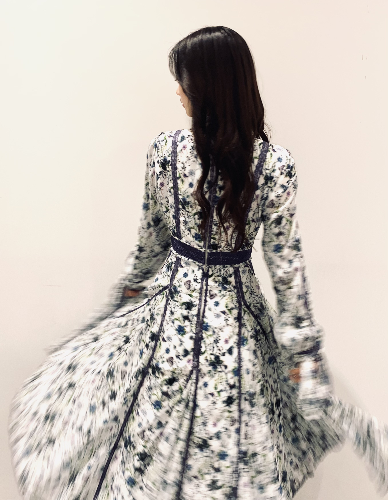
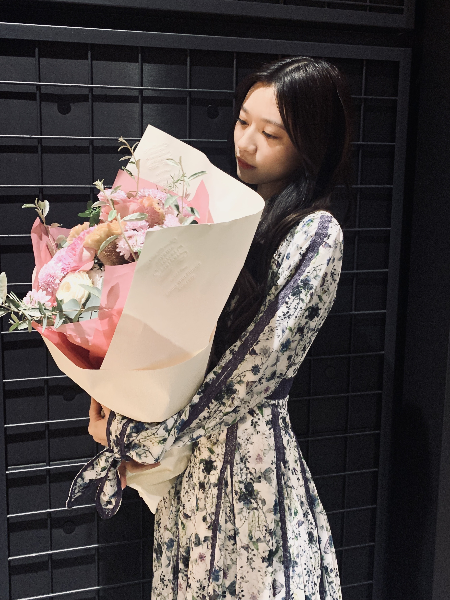
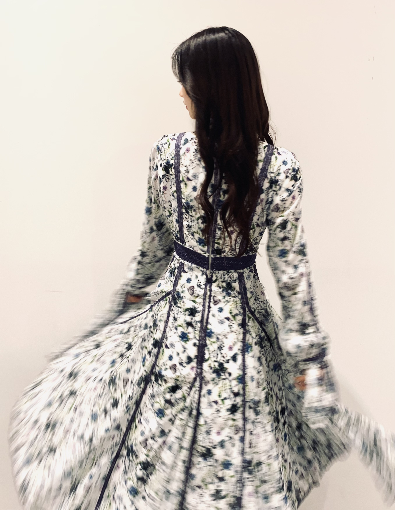
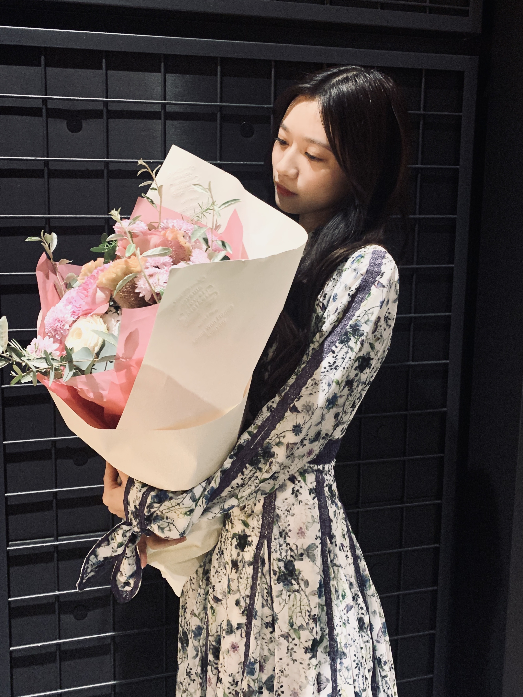

2021/1108Mon乃木坂46の寺田蘭世です。
ブログのタイトルは
もう自己紹介することも少ないだろうから
出来るだけ乃木坂46の寺田蘭世ですって言いたいなーと思って決めました。
写真集が明日発売となります。
不安やドキドキ嬉しさなど色んな気持ちが一気に
押し寄せてくる毎日で今は本当に発売されるのかと
不思議な気持ちでいっぱいです。
とにかく、最後は笑顔で終われればと今は思っています。✨
ここまで支えてくださって歩んでくださって
本当にありがとうございました。
あたたかい気持ちで見届けてくれたら嬉しいです。✨
そして、今後のことについてですが
今のところ芸能事務所に入るといった予定はなく
引退という形になります。
中学2年生で乃木坂46のオーディションを受け
乃木坂46に出逢ってから約9年が経ちます。
アイドルやタレントさんになろうなんて
夢にも思ったこともなくて
オーディションも初めてで
それまでの14年間では
アイドルになる為の努力すらしたこともなく
ただ、運命に導かれて乃木坂46に入った私には
もしかしたら贅沢すぎる9年間だったのかもしれません。
こんなに若くしてアイドルと向き合ってきた私は
おそらく自分自身でもアイドルとしての
私しかまだ知りません。
多感な時期も全て乃木坂46に捧げてきた
自信があるからこそ今回この決断をしました。
自分の中では沸々とやりたいもの
こういう人でありたいというビジョンは
小さな頃から変わりはありません。
乃木坂46として色んなことを経験して
夢を叶える大変さ
思い通りにいかないこと
嬉しいことも悲しいことも沢山ありました。
時には心折れそうなこともありました。
それでも、私の中にある意志は揺るぎませんでした。
そのどんな事があっても
どんなに向かい風が吹こうとも揺るがなかった
ずっと自分らしさを貫き通したこと
意志を持てた事はこれからの自分への財産となり
大きな自信につながりました。
乃木坂46という場所で濃ゆい人生を歩んできて
勿論、まだまだ未熟ではありますが
乃木坂46に居たからこそ
若くして色んなものを肌で感じられる
場面が多かったからこそ
幼い頃の私よりも夢はもっと大きく
そしてもっと高みを目指したいと思えるようにもなりました。
夢を叶える、自分のやりたい事をやる
これらは凄く時間がかかるかも知れません。
反対にもしかしたら
私が乃木坂46に出逢ったみたいに
運命的に案外さくっと見つかるかもしれません。
それは誰もわからないことですが
また新しい事を自分の目で見て
肌で感じて学ぶ時間も欲しいなと
今の私は一番思っています。
中学生の頃から毎日毎日休みなく今日この日まで
乃木坂46というものに向き合って
正解のない道をがむしゃらに歩んできました。
少しばかり自分に夏休みをあげようかなと。
沢山勉強して
沢山色んなものを見て
もっと自分が発信することで
自分が何処かで生きている事で
色んな人の為になる活動をしたい。
今ある常識も勿論大切だけど
自分らしさを持って人にリスペクトを込めて
常に新しい形を作り出したい。
そういう思考になれたのは紛れもなく
乃木坂46という場所に出逢えたからです。
とにかく明日からも変わらず日々精進。
残りの時間も宜しくお願いいたします。
そして、卒業してからも
お互い幸せになりましょう。✨
一生いい意味で未熟でありたいです。
沢山色んな人と出逢って
毎日に初めての感情やご縁があって
大変だろうけど色んな経験をずっとずっとして
生きていきたいです。
何処にいても私は私です。
だからそこは安心していて欲しいです。
ふと、思い出した時に
推していて良かったなと言ってもらえるような人で
ずっとありたいです。
気高く自分をしっかり持ち
人に感謝してそばにいる人に希望や癒し笑顔を与えられる人でずっとありたいです。
ひとまず、明日は写真集発売日です。✨
遂に来てしまいました。
是非、最後の思い出一緒に作りましょう。
私からの最後のお願いです。
一緒に素敵な思い出作って欲しいです。✨
今はそこで気持ちがいっぱいいっぱいです。
ドキドキもするし本当に不思議です。
でも、とにかく受け取り方は人それぞれだろうけど
沢山の人に何か気持ちが届く
そんな写真集になってくれればいいなと思っています。
好きだから手に取ってみたも良き
写真の雰囲気が好きだからも嬉しいですし
地元が撮影スポットだからも嬉しいですし
乃木坂46のファンだから
乃木坂46のファンだったから
どちらも嬉しいです。
2期生が好きだからも嬉しいですし
なんとなく気になってからでも本当に嬉しいですし
ファッションの参考でも嬉しいですし
思い出に手に取ってくださるのも嬉しいです。
海外で応援してくださっている皆さん
全然会えなくて申し訳なかったです。
でも、凄く私は皆さんのこと大好きです。
伝わっていたら何よりです。
言葉や住んでいる場所は違くても
写真なら伝わるかなーと
是非、見てください。✨
紙だからこそ伝わるものがあると思います。
私からの最後のメッセージだと思って手に取って見てください。
本当の本当に
乃木坂46の寺田蘭世としては最後の大仕事。
色んな事をしてきましたが
最後くらい心から笑顔でいたいと思っています。
是非、最後仲良くして下さい。


最近寒くなってきたのであたたかくしてくださいね。
また、明日。✨
もう自己紹介することも少ないだろうから
出来るだけ乃木坂46の寺田蘭世ですって言いたいなーと思って決めました。
写真集が明日発売となります。
不安やドキドキ嬉しさなど色んな気持ちが一気に
押し寄せてくる毎日で今は本当に発売されるのかと
不思議な気持ちでいっぱいです。
とにかく、最後は笑顔で終われればと今は思っています。✨
ここまで支えてくださって歩んでくださって
本当にありがとうございました。
あたたかい気持ちで見届けてくれたら嬉しいです。✨
そして、今後のことについてですが
今のところ芸能事務所に入るといった予定はなく
引退という形になります。
中学2年生で乃木坂46のオーディションを受け
乃木坂46に出逢ってから約9年が経ちます。
アイドルやタレントさんになろうなんて
夢にも思ったこともなくて
オーディションも初めてで
それまでの14年間では
アイドルになる為の努力すらしたこともなく
ただ、運命に導かれて乃木坂46に入った私には
もしかしたら贅沢すぎる9年間だったのかもしれません。
こんなに若くしてアイドルと向き合ってきた私は
おそらく自分自身でもアイドルとしての
私しかまだ知りません。
多感な時期も全て乃木坂46に捧げてきた
自信があるからこそ今回この決断をしました。
自分の中では沸々とやりたいもの
こういう人でありたいというビジョンは
小さな頃から変わりはありません。
乃木坂46として色んなことを経験して
夢を叶える大変さ
思い通りにいかないこと
嬉しいことも悲しいことも沢山ありました。
時には心折れそうなこともありました。
それでも、私の中にある意志は揺るぎませんでした。
そのどんな事があっても
どんなに向かい風が吹こうとも揺るがなかった
ずっと自分らしさを貫き通したこと
意志を持てた事はこれからの自分への財産となり
大きな自信につながりました。
乃木坂46という場所で濃ゆい人生を歩んできて
勿論、まだまだ未熟ではありますが
乃木坂46に居たからこそ
若くして色んなものを肌で感じられる
場面が多かったからこそ
幼い頃の私よりも夢はもっと大きく
そしてもっと高みを目指したいと思えるようにもなりました。
夢を叶える、自分のやりたい事をやる
これらは凄く時間がかかるかも知れません。
反対にもしかしたら
私が乃木坂46に出逢ったみたいに
運命的に案外さくっと見つかるかもしれません。
それは誰もわからないことですが
また新しい事を自分の目で見て
肌で感じて学ぶ時間も欲しいなと
今の私は一番思っています。
中学生の頃から毎日毎日休みなく今日この日まで
乃木坂46というものに向き合って
正解のない道をがむしゃらに歩んできました。
少しばかり自分に夏休みをあげようかなと。
沢山勉強して
沢山色んなものを見て
もっと自分が発信することで
自分が何処かで生きている事で
色んな人の為になる活動をしたい。
今ある常識も勿論大切だけど
自分らしさを持って人にリスペクトを込めて
常に新しい形を作り出したい。
そういう思考になれたのは紛れもなく
乃木坂46という場所に出逢えたからです。
とにかく明日からも変わらず日々精進。
残りの時間も宜しくお願いいたします。
そして、卒業してからも
お互い幸せになりましょう。✨
一生いい意味で未熟でありたいです。
沢山色んな人と出逢って
毎日に初めての感情やご縁があって
大変だろうけど色んな経験をずっとずっとして
生きていきたいです。
何処にいても私は私です。
だからそこは安心していて欲しいです。
ふと、思い出した時に
推していて良かったなと言ってもらえるような人で
ずっとありたいです。
気高く自分をしっかり持ち
人に感謝してそばにいる人に希望や癒し笑顔を与えられる人でずっとありたいです。
ひとまず、明日は写真集発売日です。✨
遂に来てしまいました。
是非、最後の思い出一緒に作りましょう。
私からの最後のお願いです。
一緒に素敵な思い出作って欲しいです。✨
今はそこで気持ちがいっぱいいっぱいです。
ドキドキもするし本当に不思議です。
でも、とにかく受け取り方は人それぞれだろうけど
沢山の人に何か気持ちが届く
そんな写真集になってくれればいいなと思っています。
好きだから手に取ってみたも良き
写真の雰囲気が好きだからも嬉しいですし
地元が撮影スポットだからも嬉しいですし
乃木坂46のファンだから
乃木坂46のファンだったから
どちらも嬉しいです。
2期生が好きだからも嬉しいですし
なんとなく気になってからでも本当に嬉しいですし
ファッションの参考でも嬉しいですし
思い出に手に取ってくださるのも嬉しいです。
海外で応援してくださっている皆さん
全然会えなくて申し訳なかったです。
でも、凄く私は皆さんのこと大好きです。
伝わっていたら何よりです。
言葉や住んでいる場所は違くても
写真なら伝わるかなーと
是非、見てください。✨
紙だからこそ伝わるものがあると思います。
私からの最後のメッセージだと思って手に取って見てください。
本当の本当に
乃木坂46の寺田蘭世としては最後の大仕事。
色んな事をしてきましたが
最後くらい心から笑顔でいたいと思っています。
是非、最後仲良くして下さい。


最近寒くなってきたのであたたかくしてくださいね。
また、明日。✨
2021/11/08 16:54


コメント(832)
軍団ライブ楽しみにしてる！
応援してます
大好きです！！
インスタは続けてくれるんですか？
また明日楽しみにしてます。
やっぱり引退かぁ。
なんかそんな気がしてましたが寂しいですね。
引退しても寺田蘭世さん応援しても大丈夫ですか？？？
これからも仲良くしてください。
これからも蘭世らしく、可愛らしく時にはかっこいい蘭世でいられたらこっちも嬉しいです！
楽しさ、喜び、嬉しさ、感動、、、
すべてをありがとう！
かっこよくて美しいとても魅力的な女性で素敵です！
ずっと幸せでいてください
蘭世がどこに行っても応援してるよ！やっぱりファッション系のお仕事するのかなぁ〜？蘭世には色んなとこ貰ってばかりだけど、借りは作りたくないからどこかでまた関われたらいいなって思ってるよ！
写真集！楽しみにしてる！！
これからどんな事をするのか楽しみになってます！
明日は写真集の発売だね！
showroom配信楽しみに待ってるね！
これからも仲良くしてください！
引退されても、どうかお元気で。
たくさん幸せを与えてくださってありがとうございました。
残りのひとときを存分に楽しみましょう！！
乃木坂46の寺田蘭世ちゃんも卒業した後の寺田蘭世ちゃんも応援しています。
蘭世が乃木坂に入ってくれて心から良かったって思ってるよ！！
明日写真集発売だね！！
楽しみに待ってる！！
お互いこれからの人生も幸せに過ごしていこうね！
紛れもなく蘭世は自分の中で心の支えで中心にいました！
卒業してもそれぞれが進む道を大切に日々精進していけたら何よりだと思います！今まで本当にお疲れ様そして感謝を伝えたいです！ありがとう！
引退は寂しいですが、蘭世さん幸せになってください
ほんとに憧れで可愛くてかっこよくて大好きです
どうか蘭世のこれからの人生に幸あらんことを。
けんたっきー。より
推しは推せる時に推せと言う言葉通り、蘭世さんを推して来て良かったと最近はつくづく思います。
今後は芸能界を引退という形になるとの事ですが、引退後も蘭世さんは蘭世さんらしく突き進んでいくと思うので、今後とも今まで通り陰ながら応援させていただけたら幸いです。
9年間本当にお疲れ様でした！
そしてありがとう！！、
いよいよ明日ですね写真集発売！
写真集発売が発表されてからずっとずっと待ってました。インスタにも送らせて頂いたのですが、変な私のこだわりで、「初めて買うソロ写真集は絶対に推しのを買いたい！」と決めていて。乃木撮とか乃木坂全体の写真集は買っても実はほかのメンバーのソロ写真集は買っていません、、ほかのメンバーには申し訳ないなと思ったこともありますがいよいよその夢が叶うと思うとすごくすごく嬉しいです！
本当にらんぜをずっと推してきてよかった！これからもずっと大好きです。
最後の最後までちゃんとらんぜ推しとして応援してます。
たくさん伝えたいことはあるけど、とにかく写真集おめでとう！！
明日がとっても楽しみです！！
・・・2度のレコ大、そのどちらも選抜とは・・・
いやはや、持ってますネ～～
流石、蘭世姐さん
最近はずっと握手会にもいけなかったしミーグリでも結局お話しできなかったけれど、ずっと見ていました。
また、どこかで元気な姿を拝見できたら嬉しいな〜
おげんきで！
ワクワク
写真集今から楽しみです
どう言ったらいいのか難しいですが
蘭世さんは最初から最後まで
信用できる人でした
言葉に嘘が無く
表情にも嘘が無く
時にはその真っ直ぐな性格が
苦しい思いをしたのかもしれません
けど最後まで『寺田蘭世』でした。
引退なんですね、
これからメディア等で
お見かけできないと思うと
淋しいですが
清々しい言葉を読むと
今はあなたの人生を素直に応援したい
だから後少し
乃木坂46の活動を楽しんで下さい
あなたが卒業しても
寺田蘭世が乃木坂46で残した歴史は
必ず私たちファンの心の中
これから入ってくる後輩達に
受け継がれると信じてます
寺田蘭世の乃木坂人生は
紛れもなくカッコよかったです
ありがとうございました。
けんた☆
蘭世のその自分の正義を貫き通した生き方が大好きです。
頑固だと言われることもあったかも知れませんそれでも、
自分の正しさを見失わなかった蘭世はこれからも絶対に成功します
僕も自分の中の正義を貫き通したいと思います。
もっと早くに蘭世に出会っていればよかったと少し後悔が残ります
蘭世の炎のスピーチを聞いて諦めていたことをもう一度頑張って見ようと行動に移せたのはほんとに僕の人生にとっていいことだと思います。
蘭世がこれからどんな道に進もうと光り輝くものになることを陰ながら応援しています。
蘭世のこれからの人生に幸あれ。
今のところ引退なのか...
寂しいけど、蘭世が決めたことなら、なんでも応援しようって気持ちだなー
人柄がとても素敵だから、きっとこれからの人生も素晴らしいものになるよ！
いろいろお勉強とか考えることをして、やりたいことができるといいね！
もし、もう一度姿を見せる気になったら、その素敵な姿を見せてください！！
写真集たのしみだーー
まずは蘭世ちゃん！写真集発売おめでとうございます！
学校帰りに買いに行きます
私は蘭世ちゃんを好きになったのは今年？とか去年とかなんですよ。だから卒業しちゃうのが寂しいです。でも、蘭世ちゃんの決めたことだし、人生は1度きりだし、この卒業を暖かくお祝いしたいなって思います！
アンダーライブ最終日行きました！とってもとっても素敵なライブでした。私は乃木坂のライブはこれが初めてだったからずっと忘れない思い出になりました。
長々とごめんなさい！笑
今度ミーグリお話できるので楽しみにしています！！
せり
コメントする